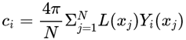
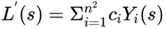
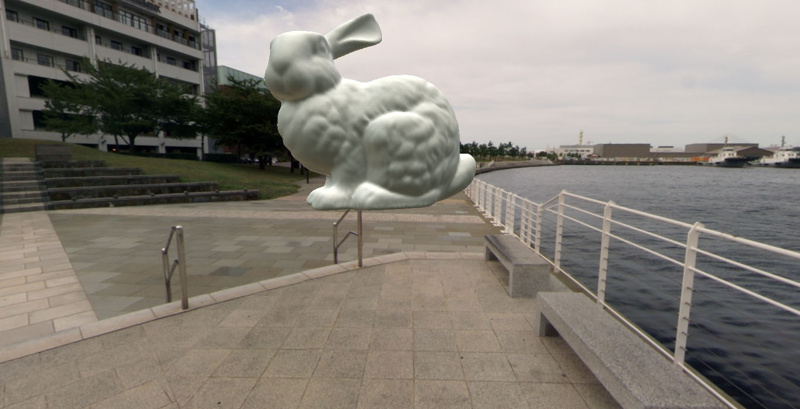

球谐光照（Spherical Harmonics Lighting）及其应用-应用篇
上一篇介绍了球谐函数的一些原理和性质，本篇主要介绍如何实现球谐光照，将这种光照应用到实际的场景中去。
我们知道，球谐光照实际上就是将周围的环境光采样成几个系数，然后渲染的时候用这几个系数来对光照进行还原，这种过程可以看做是对周围环境光的简化，从而简化计算过程。因为如果按照采样的方法进行渲染，每次渲染的时候都得对周围环境采样，从而都会耗费大量的计算时间。所以球谐光照的实现可以分成两个部分，一是环境光贴图的采样和积分运算，生成球谐参数，二是利用球谐参数对模型进行渲染。
采样器
采样是从环境光上面采，而环境光我们可以用环境光贴图表示。环境光贴图则可以采用cubemap的形式，也就是上一篇里面十字状的贴图，不过这里我们为了方便，把cubemap分成6个面，分别表示一个立方体的正x、负x、正y、负y、正z、负z。有了这六个贴图，通过一种映射关系，我们就能知道空间中的一点周围各个方向的光照值。具体的映射方法可以参考cubemap的wiki页面：https://en.wikipedia.org/wiki/Cube_mapping。
知道了每一个方向的光照值，要进行采样，还需要计算出球谐基。球谐基实际上相当于某个方向上分量的多少，多个球谐基在不同的方向上分量不同，所以才能够利用球谐基和球谐参数进行光照的还原。球谐基的计算方法，上一篇已经给出，例如，前四个分量的球谐基实际计算过程如下：
basis[0] = 1.f / 2.f * sqrt(1.f / PI);
basis[1] = sqrt(3.f / (4.f*PI))*y / r;
basis[2] = sqrt(3.f / (4.f*PI))*z / r;
basis[3] = sqrt(3.f / (4.f*PI))*x / r;
这样，每采样到一个像素，就计算相应的球谐基，并且对像素与对应的球谐基相乘后再求和，这样就相当于每个球谐基在所有像素上的积分。不过，为了得到球谐基上的平均光照强度，还需要将积分得到的数值乘以立体角并且除以总像素。简单说来就是运用这个公式求得球谐系数：

至于具体的实现，可以借助opencv，读取图片上的各个像素。值得注意的是，因为环境光贴图往往比较大，比如我选用的贴图每张大小为2048*2048，这样如果全部一次性读入内存的话将会导致程序运行内存占用过大，从而导致分配内存失败。针对这个问题，一个比较好的方式是传入一个函数对象给环境光采样器，这样环境光采样器每采到一个像素就立即调用函数对象处理。这样的话，就能把球鞋系数积分器实现成一个函数对象，传递给环境光采样器，最后再从球谐系数积分器函数对象里面取出计算出的球谐系数即可。这样可能会损失一些性能，因为需要频繁调用函数对象，然而这种性能损失是完全可以忽略的，首先对于一组环境光贴图，只需要运行一次采样器就能得到球谐系数，运行时间长短不是很重要，其次是采样过程中需要对外部数据进行频繁访问，所以瓶颈主要在于IO方面。
渲染器
我们现在只考虑环境光对一个物体的光照影响，不去考虑自阴影等问题，所以场景很简单：一个贴上环境光贴图的天空盒和一个位于中心位置的模型。有一点值得注意的是，我们是使用球谐参数来对模型进行着色，而不会涉及到天空盒，天空盒只是为了可视化对比的方便而已。对于模型上的每一点，需要知道对应的法向量，这样就能计算出对应的球谐基，然后用下列公式进行光线的还原：

还原出来的亮度值L即为该点的光照。当然这里只是最简单的光照模型，其BRDF的入射光可以看做是垂直入射的，而出射光强度与入射光相同，并且各个方向也相同，也就是对于模型的每一个顶点，其光照值与观察点无关。
具体的实现可以采用OpenGL，并且在我实现的过程中，使用了Cinder来简化一些模型加载和初始化等繁琐的操作，只注重于光照模型的实现。程序的主要过程如下：
- 纹理和模型的加载
- 相机、模型、shader的初始化
- 绘制
重点就在于shader的实现。光照的shading部分应该放在fragment shader里面，实现球谐光照需要两个部分的参数，一个是法向量，另一个是球谐光照参数。法向量首先从vbo（顶点缓冲对象）传入，由vertex shader进行接收并传递给fragment shader。球谐光照参数则通过OpenGL的uniform方式传递一个大小为16的vec3数组。然后fragment shader利用法向量首先计算出球谐基，渲染过程的球谐基计算方法与采样过程一致，利用这些球谐基再与球谐系数进行光照的还原，从而就能得到每个点的亮度值了。具体的实现参考源代码中的assets/sh_lighting.vert。
此外为了方便观察，需要添加一些交互式操作，这些Cinder里面都提供了相应的IO接口，通过旋转移动相机位置，从而可以实现视角的变化。
光照渲染结果
程序实际运行效果如下：



从程序运行的情况上看，效果比较理想。模型的各个面的朝向可以大致反映出该方向的光照情况，并且从整体上看，模型与周围的天空盒融合得比较好，达到了一定的真实感。
总结
利用球谐光照，能够很好的对空间中一个模型所受到的环境光进行采样和还原。特别是在复杂的场景当中，如果依靠实时的环境光采样，以现在硬件水平的计算能力是达不到实时的。而如果采用球谐函数进行预计算，然后在实时渲染中进行光照的还原，则可以兼顾效率与光照效果。